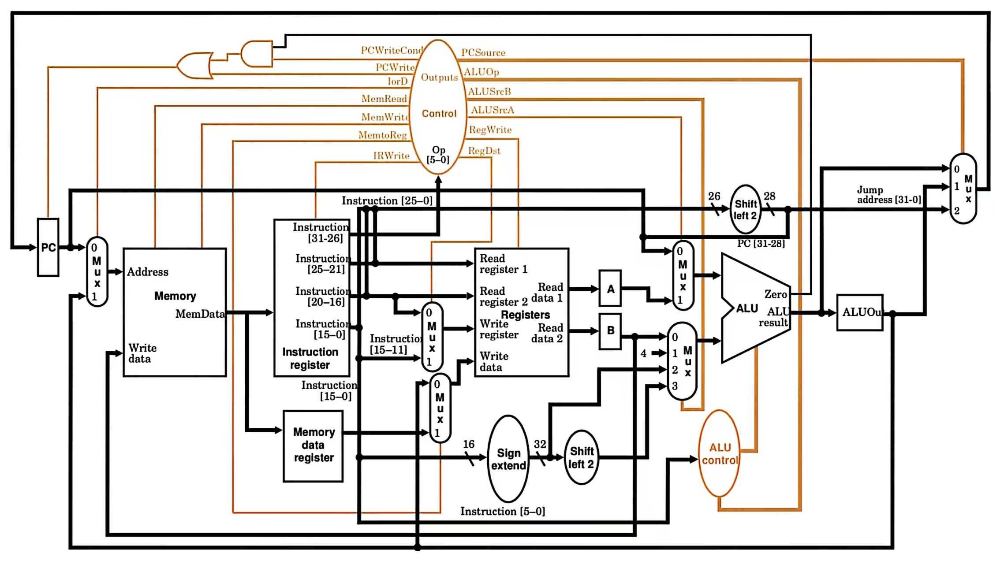

多周期CPU
单周期与多周期CPU¶
单周期CPU¶
- 特点：
- 所有指令在一个时钟周期内完成，CPI 恒为1
- 设计简单
- 局限性：
- 时钟周期受最长指令（如加载指令 lw）限制
- 硬件资源利用率低（需两个加法器 / ALU 和两个存储器）
- 无法优化不同指令的执行效率
多周期CPU¶
- 特点：
- 指令执行分解为多个阶段（如取指、译码、执行等）
- 每个阶段占用一个时钟周期，不同指令 CPI 不同（3-5 个周期），时钟周期更短
- 可复用硬件资源（如仅需一个 ALU 和存储器）
- 局限性：
- 需多次承担时序控制开销
- 控制器设计复杂
多周期CPU设计¶

数据通路的新部件¶
- 临时寄存器
- IR（指令寄存器）：存储从存储器取出的指令
- MDR（内存数据寄存器）：暂存从存储器读取的数据
- A/B 寄存器：暂存从寄存器堆读取的操作数
- ALUout：暂存 ALU 运算结果
指令执行的阶段¶
- 取指（IF）
- 从存储器读取指令
- PC=PC+4
- 译码（ID）
- 指令译码
- 读取寄存器数据
- 计算分支目标地址（Branch/Jump）
- 执行（EX）
- 根据指令类型执行
- e.g.
- Memory-related:
ALUOut = A + sign - extend(IR[15 - 0]) - R-type:
ALUOut = A op B - Branch:
if (A == B) PC = ALUOut满足分支条件，将程序计数器（PC）值更新为ALUOut中的分支目标地址 - Jump:
PC=ALUout
- Memory-related:
- 访存（MEM）
- 根据指令类型执行
- e.g.
- Memory-related:
- Load:
MDR = Memory[ALUOut] - Store:
Memory[ALUOut] = B
- Load:
- R-type:
Reg[IR[15 - 11]] = ALUOut
- Memory-related:
- 回写（WB）
- 将结果写入寄存器堆
- Load:
Reg[IR[20 - 16]] = MDR
控制器¶
- 控制信号
-
单比特信号
信号名称 信号无效(0) 信号有效(1) RegDst 目标寄存器地址取自指令中的rt字段(20-16位) 目标寄存器地址取自指令中的rd字段(15-11位) RegWrite 无 将数据写入寄存器堆指定位置 ALUSrcA ALU的第一个操作数来自程序计数器(PC) ALU的第一个操作数来自寄存器堆A MemRead 无 从内存指定地址读取数据 MemWrite 无 将数据写入内存指定地址 MemToReg 寄存器写入数据来自ALU运算结果(ALUOut) 寄存器写入数据来自内存读取结果(MDR) IorD 使用PC作为内存访问地址 使用ALU运算结果(ALUOut)作为内存访问地址 IRWrite 无 将内存读取的指令写入指令寄存器 PCWrite 无 更新PC，来源由PCsrc信号选择 PCWriteCond 无 当ALU输出为零时(Zero=1)更新PC -
双比特信号
信号名称 编码值 功能 ALUOp 00 控制ALU执行加法操作(用于PC递增、地址计算) 01 控制ALU执行减法操作(用于分支条件判断) 10 根据指令中的功能码(func字段)决定ALU操作类型 ALUSrcB 00 ALU的第二个操作数来自寄存器堆B 01 ALU的第二个操作数为常数4(用于PC+4计算) 10 ALU的第二个操作数为指令低16位符号扩展后的值 11 ALU的第二个操作数为指令低16位符号扩展并左移2位后的值(用于分支地址计算) PCSrc 00 PC更新为PC+4(顺序执行) 01 PC更新值为分支目标地址(ALUOut，用于条件分支) 10 PC更新值为跳转目标地址(指令高26位左移2位并拼接PC高4位)
- 控制器设计
- 以
add指令为例 - 取指
| 控制信号 | PCWrite | IorD | MemRead | MemWrite | IRWrite | PCSource | ALUOp | ALUSrcB | ALUSrcA | RegWrite |
|---|---|---|---|---|---|---|---|---|---|---|
| 值 | 1 | 0 | 1 | 0 | 1 | 00 | 00 | 01 | 0 | 0 |
- 译码
| 控制信号 | ALUOp | ALUSrcB | ALUSrcA |
|---|---|---|---|
| 值 | 00 | 11 | 0 |
- 运算
| 控制信号 | ALUOp | ALUSrcB | ALUSrcA |
|---|---|---|---|
| 值 | 10 | 00 | 1 |
- 写回
| 控制信号 | MemtoReg | RegWrite | RegDst |
|---|---|---|---|
| 值 | 0 | 1 | 1 |
- 控制器分类
- Hardwired Controller（硬布线控制器）
- 适用于RISC
- 原理：基于有限状态机（FSM），通过组合逻辑（如 PLA 电路）生成控制信号，每个状态对应指令执行的一个阶段
- 优点：控制信号生成快
- 缺点：ISA复杂时难以维护，需重新设计硬件逻辑
- Micro-program Controller（微程序控制器）
- 适用于CISC
- 原理：
- 将指令分解为微指令序列，存储于控制存储器（CS），每条微指令对应一个微操作（如寄存器写、ALU 运算）
- 微指令包含微命令（如RegWrite=1）和下一条微指令地址，通过微程序计数器（μPC）顺序执行
- 优点：设计灵活，易于修改指令集
- 缺点：执行速度较慢（需额外周期读取微指令），效率低于硬布线控制器
性能分析¶
- 各指令周期数
- 分支/跳转指令（beq/j）：3周期
- R型指令（add）/存储指令（sw）：4周期
- 加载指令（lw）：5周期